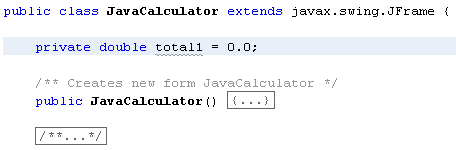

To store the value, we need to set up a field variable, that's a variable outside of any button code. This is so that all the buttons can see what has been stored in it.
Add the following variable near the top of the coding window: (You can place it near the bottom, with the field variables NetBeans has set up for the form objects, but we'll keep our variables separate.)
private double total1 = 0.0;
Here's the code window:

So we're setting up a variable called total1. The type of variable is a double. Its default value is 0.0.
To store the value from the text field, we need to get the text. But we'll need to convert it from a String to a Double. You can do so with the parseDouble method of the Double object:
Double.parseDouble( txtDisplay.getText( ) )
In between the round brackets of parseDouble we get the text from the txtDisplay text field.
However, when we store the value from the text field into the total1 variable, we need to retain what is already in total1. We can also clear the text field, ready for the second number.
So return to Design view in NetBeans. Double click your Plus button to generate the code stub. Now add the following two lines to your plus button:
total1 = total1 + Double.parseDouble( txtDisplay.getText(
) ) ;
txtDisplay.setText("");
In between the round brackets of setText, we have a pair of double quotes, with no space between them. This is enough to clear the text field.
And that's it for the Plus button, for the moment. We'll come back to it later. All we're doing, though, is storing a number in the total1 variable, and keeping what is already there. Once the number is stored, we've cleared the text field. The user can now enter a second number to be added to the first.
in the next part, we'll add code for the equals button on our calcualtor.